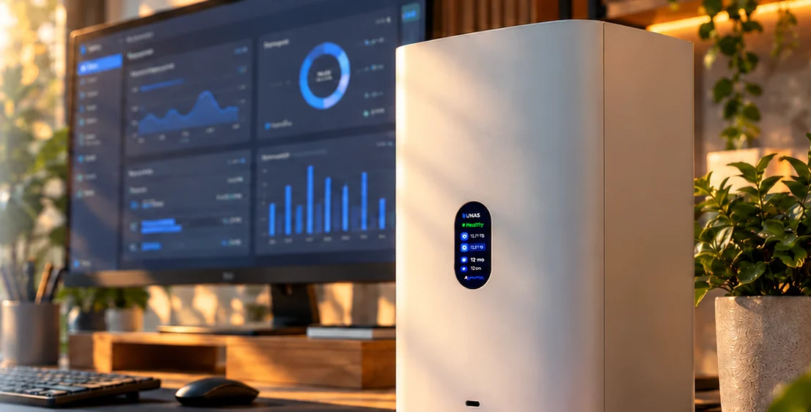

UniFi NAS in Home AssistantUniFi-NAS in Home Assistant
UniFi UNAS talks to UniFi OS and UniFi Drive the way their web interface does: storage, every disk with its health, drives, system values, the fan profile, data scrubbing and updates. Local, no cloud, nothing installed on the NAS.UniFi UNAS spricht mit UniFi OS und UniFi Drive wie deren Weboberfläche: Speicher, jede Festplatte mit ihrem Zustand, Laufwerke, Systemwerte, Lüfterprofil, Datenprüfung und Updates. Lokal, ohne Cloud, nichts auf dem NAS installiert.

Illustration: AI-generated scene and made-up values, not a screenshot.Illustration: KI-generierte Szene und erfundene Werte, kein Screenshot.
Just arrivedGerade neu
26.10.2 pins the certificate of your UNAS, tells missing rights apart from a wrong password and puts disk health into words.26.10.2 merkt sich das Zertifikat deiner UNAS, unterscheidet fehlende Rechte von einem falschen Passwort und sagt den Zustand der Platten in Worten.
At setup the integration remembers the certificate the UNAS shows and only sends the password to that one. If it ever changes, a repair shows the old and the new fingerprint.Bei der Einrichtung merkt sich die Integration das Zertifikat der UNAS und schickt das Passwort nur noch dorthin. Ändert es sich, zeigt eine Reparatur alten und neuen Fingerabdruck.
An account without UniFi OS admin rights gets a plain message for restart, shutdown and updates instead of a request for a new password.Fehlen dem Konto Admin-Rechte in UniFi OS, gibt es bei Neustart, Ausschalten und Updates eine klare Meldung statt einer Frage nach dem Passwort.
Read and write rate of all disks together, the five minute average of the Drive graph.Lese- und Schreibrate aller Platten zusammen, das Fünf-Minuten-Mittel der Drive-Grafik.
Each disk shows Good or Check instead of a bare 5.Jede Platte zeigt Gut oder Prüfen statt einer nackten 5.
How many disks report a risk, the hottest disk, and lost redundancy in the storage problem.Wie viele Platten ein Risiko melden, die heißeste Platte und verlorene Redundanz im Speicherproblem.
Everything that changed, release by release: the changelog.Alles, was sich geändert hat, Release für Release: das Changelog.
What it doesWas sie kann
Every value comes from the same interfaces the UniFi Drive web interface uses, tried out on a UNAS 2.Jeder Wert kommt aus denselben Schnittstellen, die die Weboberfläche von UniFi Drive nutzt, ausprobiert an einer UNAS 2.
Used, free, capacity and usage over all pools, the storage status and a problem sensor for degraded pools or lost redundancy.Belegt, frei, Kapazität und Auslastung über alle Pools, der Speicherstatus und ein Problem-Melder für eingeschränkte Pools oder verlorene Redundanz.
Temperature, power-on hours, bad sectors, health and a problem sensor with the risk reasons, plus a quick SMART test.Temperatur, Betriebsstunden, defekte Sektoren, Zustand und ein Problem-Melder mit den Risiko-Gründen, dazu ein SMART-Schnelltest.
Usage of every shared and personal drive, with quota, members, snapshots and remote backup as attributes.Belegung jedes geteilten und persönlichen Laufwerks, mit Kontingent, Mitgliedern, Snapshots und Remote-Backup als Attribute.
CPU load and temperature, memory, uptime, throughput and the link speed, so a port stuck at 1 GbE stands out.CPU-Last und -Temperatur, Arbeitsspeicher, Laufzeit, Durchsatz und die Verbindungsgeschwindigkeit, damit ein Port auf 1 GbE auffällt.
Quiet, default or cooling, switchable from Home Assistant. State and last run of the data scrub, and a button to start one.Leise, Standard oder Kühlen, umschaltbar aus Home Assistant. Zustand und letzter Lauf der Datenprüfung und ein Knopf zum Starten.
Both appear under Settings, Updates, with an install button, just like in the UniFi interface.Beide erscheinen unter Einstellungen, Updates, mit Installieren-Knopf, wie in der UniFi-Oberfläche.
HealthZustand
score.Gut ist der höchste Drive-Wert 5, Prüfen alles darunter. Die Zahl bleibt im Attribut score.EntitiesEntitäten
All IDs start with the device name, for example sensor.unas_2_storage_used. Names in English and German.Alle IDs beginnen mit dem Gerätenamen, zum Beispiel sensor.unas_2_storage_used. Namen auf Deutsch und Englisch.
| PlatformPlattform | EntityEntität | NoteHinweis |
|---|---|---|
| Sensor | storage_used storage_free storage_capacity storage_usage storage_status | Over all poolsÜber alle Pools |
| Sensor | storage_read storage_write disks_at_risk hottest_disk | Throughput as five minute averageDurchsatz als Fünf-Minuten-Mittel |
| Sensor | cpu_load cpu_temperature memory_usage started network_receive network_transmit link_speed | |
| Sensor | <drive>_used | One per drive, quota and members as attributesJe Laufwerk, Kontingent und Mitglieder als Attribute |
| Per diskJe Platte | temperature power_on_hours bad_sectors health problem run_quick_smart_test | Device UNAS 2 disk 1 …Gerät UNAS 2 Festplatte 1 … |
| Binary sensorBinärsensor | storage_problem smb time_machine nfs | |
| SelectAuswahl | fan_profile | Quiet, default, coolingLeise, Standard, Kühlen |
| ButtonTaste | restart shut_down start_data_scrubbing | Shut down is disabled by defaultAusschalten ist standardmäßig deaktiviert |
| Update | unifi_os unifi_drive | With install buttonMit Installieren-Knopf |
SecuritySicherheit
UniFi OS uses a self-signed certificate. The integration remembers the one your UNAS shows at setup and from then on talks to nothing else.UniFi OS nutzt ein selbstsigniertes Zertifikat. Die Integration merkt sich das, das deine UNAS bei der Einrichtung zeigt, und spricht danach mit nichts anderem.
For monitoring a local account with access to UniFi Drive is enough. Admin rights in UniFi OS are only needed for restart, shutdown and updates.Für die Anzeige reicht ein lokales Konto mit Zugriff auf UniFi Drive. Admin-Rechte in UniFi OS braucht es nur für Neustart, Ausschalten und Updates.
InstallInstallation
As a custom repository.Als benutzerdefiniertes Repository.
https://github.com/SH1FT-W/unifi-unasNew address or another account later? Three dots, Reconfigure.Später eine neue Adresse oder ein anderes Konto? Drei Punkte, Neu konfigurieren.
No cloud account, no YAML, nothing on the NAS.Kein Cloud-Konto, kein YAML, nichts auf dem NAS.
Tested on a UNAS 2 (UniFi OS 6.0.11, Drive 4.4.17). UNAS 4, UNAS Pro, Pro 4 and Pro 8 share the same interface, but are untested. Feedback with a diagnostics file is welcome.Getestet an einer UNAS 2 (UniFi OS 6.0.11, Drive 4.4.17). UNAS 4, UNAS Pro, Pro 4 und Pro 8 nutzen dieselbe Schnittstelle, sind aber ungetestet. Rückmeldung mit Diagnose-Datei ist willkommen.
Download the latest release, copy its custom_components/unas folder into /config/custom_components/, restart Home Assistant and add the UNAS.Lade das neueste Release herunter, kopiere den Ordner custom_components/unas nach /config/custom_components/, starte Home Assistant neu und füge die UNAS hinzu.
Good to knowGut zu wissen
On a UNAS 2 a UniFi OS API key reads storage, disks, system values and the fan profile, but not the drive usage, the updates or the storage throughput, and it cannot switch anything. So the integration logs in with a local account.An einer UNAS 2 liest ein API-Key aus UniFi OS Speicher, Platten, Systemwerte und das Lüfterprofil, aber nicht die Belegung der Laufwerke, die Updates oder den Speicher-Durchsatz, und schalten kann er nichts. Deshalb meldet sich die Integration mit einem lokalen Konto an.
No. Ubiquiti offers no public API for UniFi Drive, the integration uses the interfaces of its web interface. A Drive update can change them; the entities then turn unavailable and the diagnostics show the error.Nein. Ubiquiti bietet für UniFi Drive keine öffentliche Schnittstelle, die Integration nutzt die der Weboberfläche. Ein Drive-Update kann sie ändern; dann sind die Entitäten nicht verfügbar und die Diagnose zeigt den Fehler.
UniFi Drive does not say. 5 is healthy, so Health shows Good for 5 and Check for anything below. Look at the disk in UniFi Drive under Storage.Das verrät UniFi Drive nicht. 5 ist gesund, deshalb zeigt Zustand bei 5 Gut und darunter Prüfen. Die Platte dann in UniFi Drive unter Speicher ansehen.
Restart, shutdown and updates need admin rights in UniFi OS. Everything else works with a plain Drive user.Neustart, Ausschalten und Updates brauchen Admin-Rechte in UniFi OS. Alles andere geht mit einem einfachen Drive-Benutzer.
Normal after a factory reset, a reinstall of UniFi OS or a renewed certificate: accept it. If you changed nothing, do not accept it, something else may be answering at that address.Normal nach Zurücksetzen, Neuinstallation von UniFi OS oder einem erneuerten Zertifikat: annehmen. Hast du nichts geändert, nicht annehmen, dann antwortet womöglich ein anderes Gerät unter der Adresse.
The button and the last run refer to the first pool. A UNAS 2 has exactly one. The SSD cache of the Pro models is not shown separately.Knopf und letzter Lauf beziehen sich auf den ersten Pool. Eine UNAS 2 hat genau einen. Der SSD-Cache der Pro-Modelle wird nicht gesondert angezeigt.
Download the diagnostics (Settings, Devices & services, UniFi UNAS, three dots) and attach them to a GitHub issue. Address, MAC address and serial numbers are left out.Diagnose herunterladen (Einstellungen, Geräte & Dienste, UniFi UNAS, drei Punkte) und an ein GitHub-Issue hängen. Adresse, MAC-Adresse und Seriennummern sind nicht enthalten.
UniFi UNAS
One integration, every value UniFi Drive shows, no cloud.Eine Integration, jeder Wert aus UniFi Drive, keine Cloud.